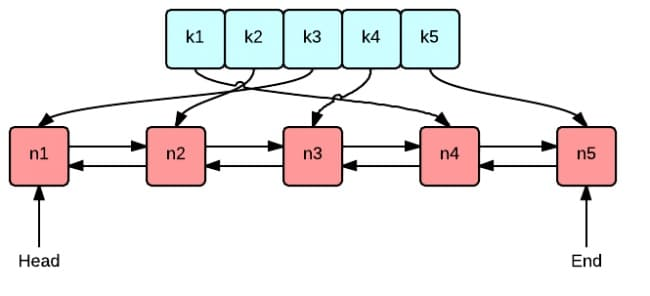

动手写分布式缓存 - GeeCache第一天 LRU 缓存淘汰策略
7天用 Go语言/golang 从零实现分布式缓存 GeeCache 教程(7 days implement golang distributed cache from scratch tutorial)，动手写分布式缓存，参照 groupcache 的实现。本文介绍了常用的三种缓存淘汰(失效)算法：先进先出(FIFO)，最少使用(LFU…
本文是7天用Go从零实现分布式缓存GeeCache教程系列的第一篇。
- 介绍常用的三种缓存淘汰(失效)算法：FIFO，LFU 和 LRU
- 实现 LRU 缓存淘汰算法，代码约80行
1 FIFO/LFU/LRU 算法简介
GeeCache 的缓存全部存储在内存中，内存是有限的，因此不可能无限制地添加数据。假定我们设置缓存能够使用的内存大小为 N，那么在某一个时间点，添加了某一条缓存记录之后，占用内存超过了 N，这个时候就需要从缓存中移除一条或多条数据了。那移除谁呢？我们肯定希望尽可能移除“没用”的数据，那如何判定数据“有用”还是“没用”呢？
1.1 FIFO(First In First Out)
先进先出，也就是淘汰缓存中最老(最早添加)的记录。FIFO 认为，最早添加的记录，其不再被使用的可能性比刚添加的可能性大。这种算法的实现也非常简单，创建一个队列，新增记录添加到队尾，每次内存不够时，淘汰队首。但是很多场景下，部分记录虽然是最早添加但也最常被访问，而不得不因为呆的时间太长而被淘汰。这类数据会被频繁地添加进缓存，又被淘汰出去，导致缓存命中率降低。
1.2 LFU(Least Frequently Used)
最少使用，也就是淘汰缓存中访问频率最低的记录。LFU 认为，如果数据过去被访问多次，那么将来被访问的频率也更高。LFU 的实现需要维护一个按照访问次数排序的队列，每次访问，访问次数加1，队列重新排序，淘汰时选择访问次数最少的即可。LFU 算法的命中率是比较高的，但缺点也非常明显，维护每个记录的访问次数，对内存的消耗是很高的；另外，如果数据的访问模式发生变化，LFU 需要较长的时间去适应，也就是说 LFU 算法受历史数据的影响比较大。例如某个数据历史上访问次数奇高，但在某个时间点之后几乎不再被访问，但因为历史访问次数过高，而迟迟不能被淘汰。
1.3 LRU(Least Recently Used)
最近最少使用，相对于仅考虑时间因素的 FIFO 和仅考虑访问频率的 LFU，LRU 算法可以认为是相对平衡的一种淘汰算法。LRU 认为，如果数据最近被访问过，那么将来被访问的概率也会更高。LRU 算法的实现非常简单，维护一个队列，如果某条记录被访问了，则移动到队尾，那么队首则是最近最少访问的数据，淘汰该条记录即可。
2 LRU 算法实现
2.1 核心数据结构

这张图很好地表示了 LRU 算法最核心的 2 个数据结构
- 绿色的是字典(map)，存储键和值的映射关系。这样根据某个键(key)查找对应的值(value)的复杂是
O(1)，在字典中插入一条记录的复杂度也是O(1)。 - 红色的是双向链表(double linked list)实现的队列。将所有的值放到双向链表中，这样，当访问到某个值时，将其移动到队尾的复杂度是
O(1)，在队尾新增一条记录以及删除一条记录的复杂度均为O(1)。
接下来我们创建一个包含字典和双向链表的结构体类型 Cache，方便实现后续的增删查改操作。
day1-lru/geecache/lru/lru.go - github
package lru
import "container/list"
// Cache is a LRU cache. It is not safe for concurrent access.
type Cache struct {
maxBytes int64
nbytes int64
ll *list.List
cache map[string]*list.Element
// optional and executed when an entry is purged.
OnEvicted func(key string, value Value)
}
type entry struct {
key string
value Value
}
// Value use Len to count how many bytes it takes
type Value interface {
Len() int
}
- 在这里我们直接使用 Go 语言标准库实现的双向链表
list.List。 - 字典的定义是
map[string]*list.Element，键是字符串，值是双向链表中对应节点的指针。 maxBytes是允许使用的最大内存，nbytes是当前已使用的内存，OnEvicted是某条记录被移除时的回调函数，可以为 nil。- 键值对
entry是双向链表节点的数据类型，在链表中仍保存每个值对应的 key 的好处在于，淘汰队首节点时，需要用 key 从字典中删除对应的映射。 - 为了通用性，我们允许值是实现了
Value接口的任意类型，该接口只包含了一个方法Len() int，用于返回值所占用的内存大小。
方便实例化 Cache，实现 New() 函数：
// New is the Constructor of Cache
func New(maxBytes int64, onEvicted func(string, Value)) *Cache {
return &Cache{
maxBytes: maxBytes,
ll: list.New(),
cache: make(map[string]*list.Element),
OnEvicted: onEvicted,
}
}
2.2 查找功能
查找主要有 2 个步骤，第一步是从字典中找到对应的双向链表的节点，第二步，将该节点移动到队尾。
// Get look ups a key's value
func (c *Cache) Get(key string) (value Value, ok bool) {
if ele, ok := c.cache[key]; ok {
c.ll.MoveToFront(ele)
kv := ele.Value.(*entry)
return kv.value, true
}
return
}
- 如果键对应的链表节点存在，则将对应节点移动到队尾，并返回查找到的值。
c.ll.MoveToFront(ele)，即将链表中的节点ele移动到队尾（双向链表作为队列，队首队尾是相对的，在这里约定 front 为队尾）
2.3 删除
这里的删除，实际上是缓存淘汰。即移除最近最少访问的节点（队首）
// RemoveOldest removes the oldest item
func (c *Cache) RemoveOldest() {
ele := c.ll.Back()
if ele != nil {
c.ll.Remove(ele)
kv := ele.Value.(*entry)
delete(c.cache, kv.key)
c.nbytes -= int64(len(kv.key)) + int64(kv.value.Len())
if c.OnEvicted != nil {
c.OnEvicted(kv.key, kv.value)
}
}
}
c.ll.Back()取到队首节点，从链表中删除。delete(c.cache, kv.key)，从字典中c.cache删除该节点的映射关系。- 更新当前所用的内存
c.nbytes。 - 如果回调函数
OnEvicted不为 nil，则调用回调函数。
2.4 新增/修改
// Add adds a value to the cache.
func (c *Cache) Add(key string, value Value) {
if ele, ok := c.cache[key]; ok {
c.ll.MoveToFront(ele)
kv := ele.Value.(*entry)
c.nbytes += int64(value.Len()) - int64(kv.value.Len())
kv.value = value
} else {
ele := c.ll.PushFront(&entry{key, value})
c.cache[key] = ele
c.nbytes += int64(len(key)) + int64(value.Len())
}
for c.maxBytes != 0 && c.maxBytes < c.nbytes {
c.RemoveOldest()
}
}
- 如果键存在，则更新对应节点的值，并将该节点移到队尾。
- 不存在则是新增场景，首先队尾添加新节点
&entry{key, value}, 并字典中添加 key 和节点的映射关系。 - 更新
c.nbytes，如果超过了设定的最大值c.maxBytes，则移除最少访问的节点。
最后，为了方便测试，我们实现 Len() 用来获取添加了多少条数据。
// Len the number of cache entries
func (c *Cache) Len() int {
return c.ll.Len()
}
3 测试
例如，我们可以尝试添加几条数据，测试 Get 方法
day1-lru/geecache/lru/lru_test.go - github
type String string
func (d String) Len() int {
return len(d)
}
func TestGet(t *testing.T) {
lru := New(int64(0), nil)
lru.Add("key1", String("1234"))
if v, ok := lru.Get("key1"); !ok || string(v.(String)) != "1234" {
t.Fatalf("cache hit key1=1234 failed")
}
if _, ok := lru.Get("key2"); ok {
t.Fatalf("cache miss key2 failed")
}
}
测试，当使用内存超过了设定值时，是否会触发“无用”节点的移除：
func TestRemoveoldest(t *testing.T) {
k1, k2, k3 := "key1", "key2", "k3"
v1, v2, v3 := "value1", "value2", "v3"
cap := len(k1 + k2 + v1 + v2)
lru := New(int64(cap), nil)
lru.Add(k1, String(v1))
lru.Add(k2, String(v2))
lru.Add(k3, String(v3))
if _, ok := lru.Get("key1"); ok || lru.Len() != 2 {
t.Fatalf("Removeoldest key1 failed")
}
}
测试回调函数能否被调用：
func TestOnEvicted(t *testing.T) {
keys := make([]string, 0)
callback := func(key string, value Value) {
keys = append(keys, key)
}
lru := New(int64(10), callback)
lru.Add("key1", String("123456"))
lru.Add("k2", String("k2"))
lru.Add("k3", String("k3"))
lru.Add("k4", String("k4"))
expect := []string{"key1", "k2"}
if !reflect.DeepEqual(expect, keys) {
t.Fatalf("Call OnEvicted failed, expect keys equals to %s", expect)
}
}